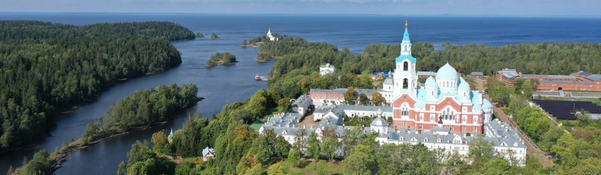
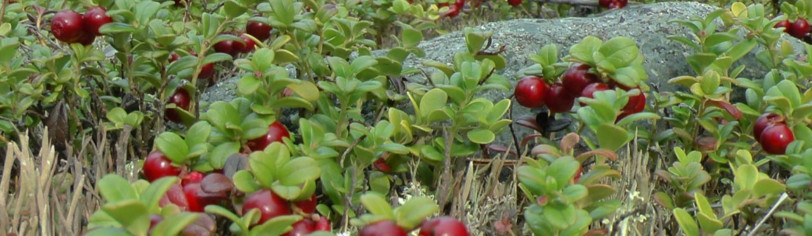
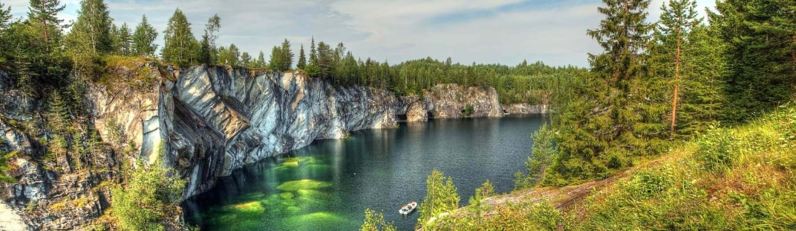

В краю, где природа свой лик величавый
Венчает суровым сосновым венцом
И, снегом напудрив столетни дубравы,
Льдом землю грунтует, а небо свинцом
(Владимир Бенедиктов)
Мир тайн и удивительной природы ждёт Тебя!
Очень долго республика Карелия была широко известна в узких кругах любителей дикого туризма, охоты и рыбалки, но теперь все изменилось. Завораживающие скалы, обилие невероятных водопадов, будоражащие воображение болота, и множество троп, уходящих вглубь Тайги — это всё среди нас, это все — Карелия. Карелия открылась для всех видов туризма. Нет такого направления туризма, который нельзя встретить в этом дивном крае:
Мы же хотим вам рассказать об этом дивном крае и его мотивах: о его быте, о народе, ранее жившем здесь, о музыке и музыкальных инструментах о кухне, а также, особое внимание обратим на достопримечательности!
Природа манит и завораживает, небо открывается другими оттенками синего, а звезды кажутся еще ближе, стоит только руку протянуть и... Но нет, все таки космос далеко. руку протянуть и они окажутся в ладони... Но на самом деле звезды и космос далеко. На Севере Карелии можно наблюдать Северное сияние — много фотографий сделано, картин написано, но они не передают всю красоту, насыщенность красок и тот завораживающий восторг, когда видишь его своими глазами!
Нельзя обойти стороной и древнее верование местных народов — шаманизм. Здесь он так же еще существует, а места проведения обрядов обладают великой силой. И это еще один повод посетить этот край. Многие сюда приезжают зарядиться энергией Космоса и Земли, например, на гору Воттоваара очистить свой разум и получить ответы на свои вопросы.
Подводя итог, как человек, живущий здесь и много путешествующий, хочется сказать: «Послушайте, ведь если звезды зажигают, значит это кому-нибудь нужно!..» (В.Маяковский). Так и с Карелией — нет больше такого края, где так легко дышится полной грудью, где мозг неподвластен угнетающим мыслям и чувство внутренней свободы будоражит и успокаивает одновременно.